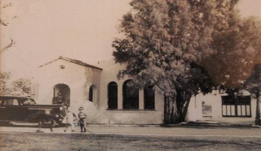

The Blue Willow house in 1940.
The Blue Willow Restaurant first opened its doors in June 1978 as a full service restaurant, bakery, and gift shop. During the 14 years following its opening, it continued to expand and increase in success under the ownership of Janet Seidler. In 1992 the business was sold to another family. Fortunately, in April of 1999, the business returned to original ownership. The Blue Willow is currently co-owned by Janet Seidler and her daughter Rebecca Ramey who look forward to serving the many loyal customers that have enjoyed Blue Willow for the past 30 years.